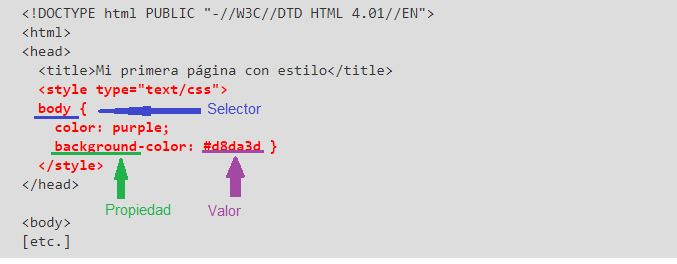
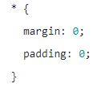
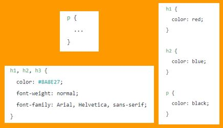
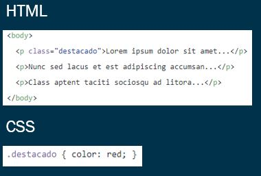
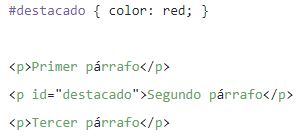

-
selectores
El selector, en forma basica es la selección del elemento al cual se le quiere aplicar el estilo.
Este es una de las partes que componen las reglas que se usan en el CSS:
1. el selector, el cual le dice al navegador la parte del documento que se verá afectada por la regla;
2. la propiedad. la cual especifica qué aspecto del diseño va a cambiarse;
3. el valor, el cual da el valor para la propiedad.
(Bos, 2019)

-
Selector universal
Algunos tipos de selectores
Se utiliza para seleccionar todos los elementos de la pagina, se indica mediante un asterisco (*).
(Uniwebsidad, 2001-2020)

- Selector de tipo o etiqueta
Algunos tipos de selectores
Selecciona todos los elementos de la página cuya etiqueta HTML coincide con el valor del selector.
(Uniwebsidad, 2001-2020)

Selector de clase
Algunos tipos de selectores
Se utiliza un atributo class en el elemento al que se quiera aplicar el estilo, llamando luego el atributo.
(Uniwebsidad, 2001-2020)

Selector de ID
Algunos tipos de selectores
La sintaxis de los selectores de ID es muy parecida a la de los selectores de clase, salvo que se utiliza el
símbolo de la almohadilla (#) en vez del punto (.) como prefijo del nombre de la regla CSS
(Uniwebsidad, 2001-2020)
